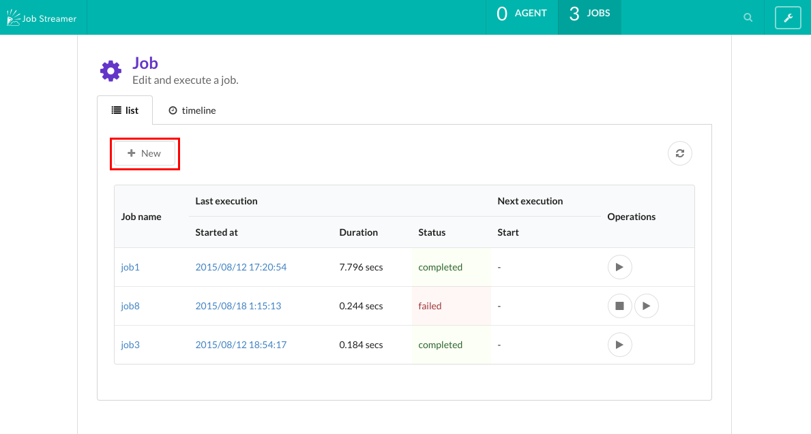
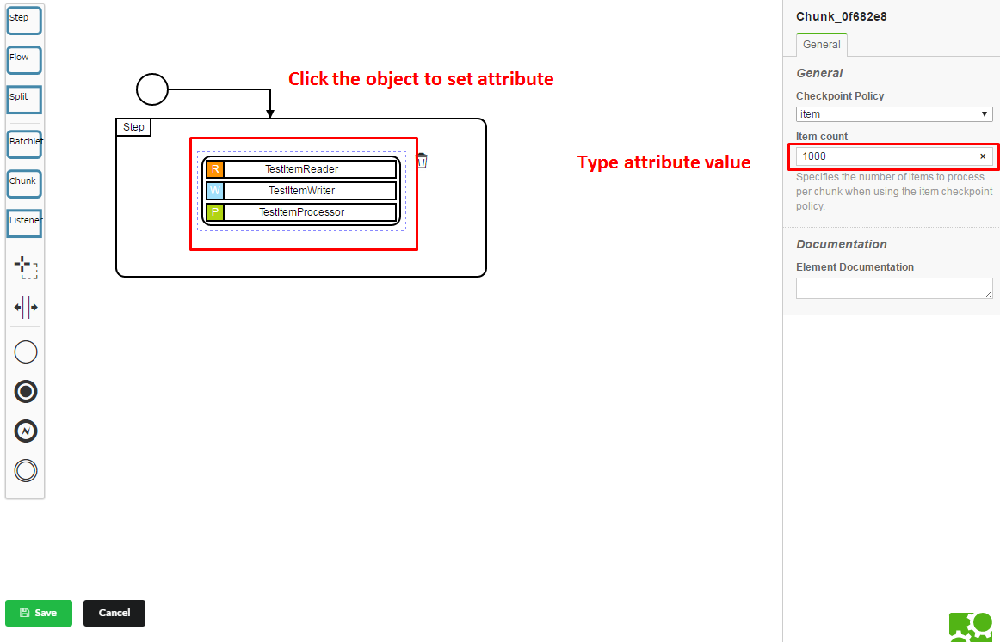

Create job
1. Open the login page of job-streamer-console.
http://[IP address of the server]:[port number of Console(default: 8080)]
2. Enter id/password of the login user and login.
Built-in admin user is admin/password123
3. Press the “New” button on the top page.

4. Create a job.
For example, we create a simple job that has only one step as following.


- Set attributes.
 - Set properties.
- You can specify a job parameter here in the following format (EL: Expression Language).
#{jobParameters[‘ParameterName’]}
- You can specify a job parameter here in the following format (EL: Expression Language).

You can use only batch components (Batchlet/ItemReader/ItemWriter/ItemProcessor etc.) that was deployed to the Control-bus.
If you want to use new batch components, please refer to Deploy batch components.